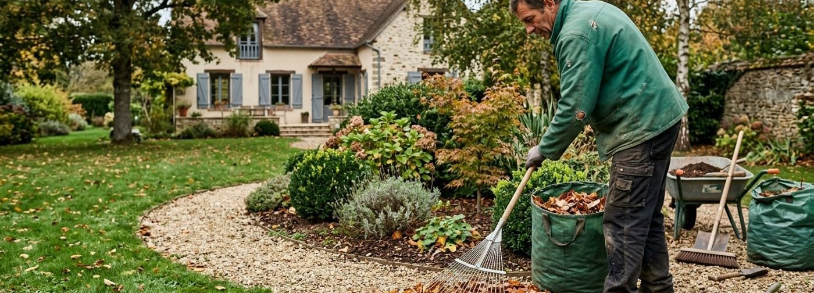
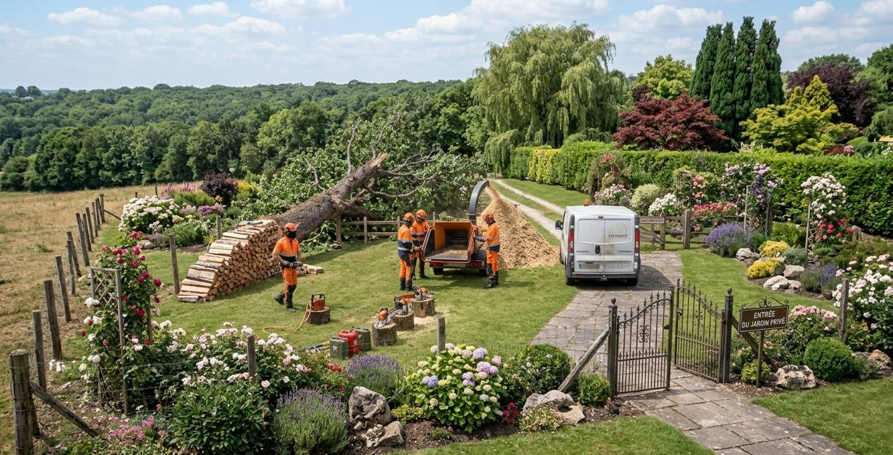
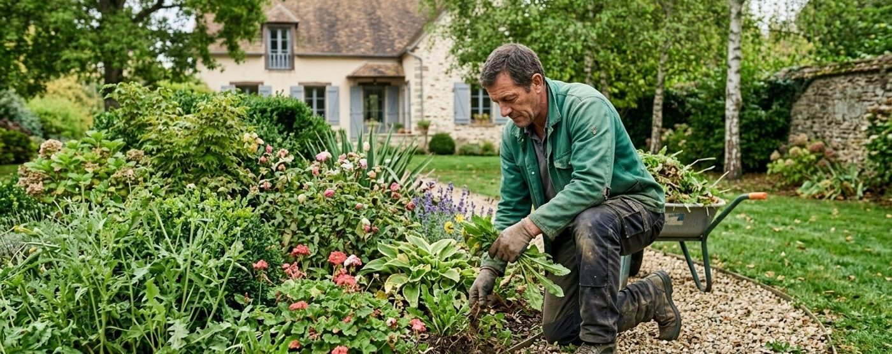
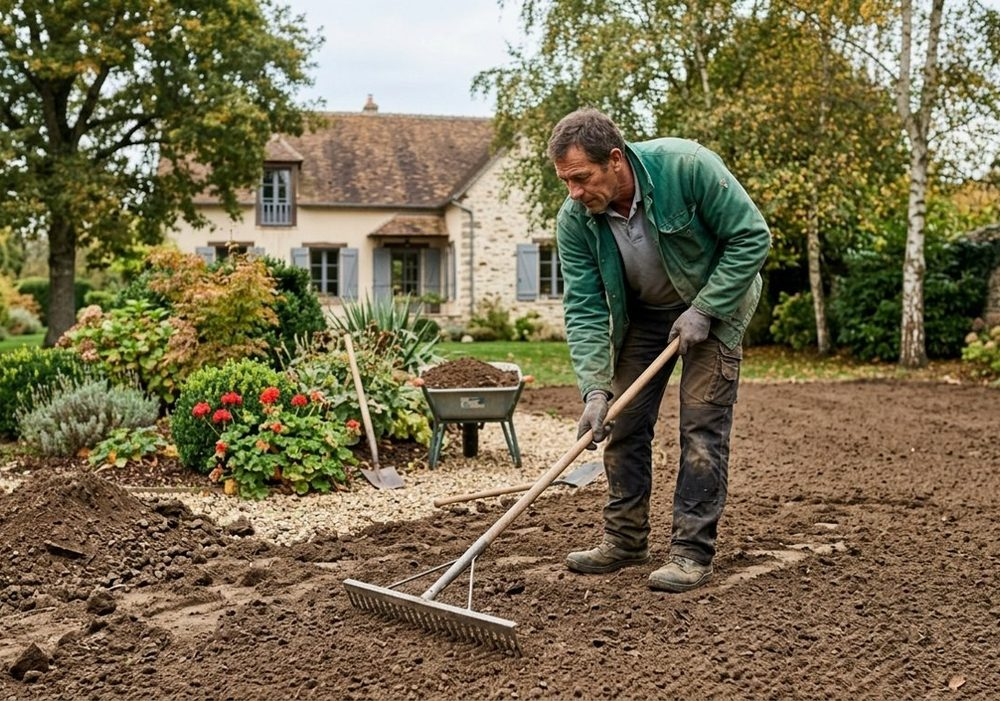

Conception du projet
Une réflexion sur l'organisation de l'espace avant les travaux.
Nos prestations
Quatre savoir-faire pour vos espaces verts, à Maule et dans les environs.



Création
Un jardin pensé selon votre terrain, vos usages et vos envies : implantation des massifs, des allées et des espaces de vie.
Une réflexion sur l'organisation de l'espace avant les travaux.

Des massifs adaptés à l'exposition et au style du jardin.
Plantation
Plantation d'arbustes, de haies et de végétaux, puis mise en place d'une pelouse sur un sol correctement préparé.



Image d'illustration.
Entretien
Un jardin demande un entretien suivi : intervention ponctuelle ou passages réguliers, selon vos besoins.


Aménagement
Des aménagements extérieurs réalisés avec soin pour prolonger votre maison : allées, terrasses et murets.
Dites-nous ce dont vous avez besoin : création, plantation, entretien ou aménagement.
Services d'aménagement paysager à Maule (78) et alentours.
© Envies de jardins · Maquette de démonstration